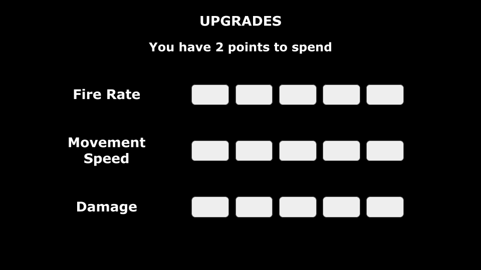
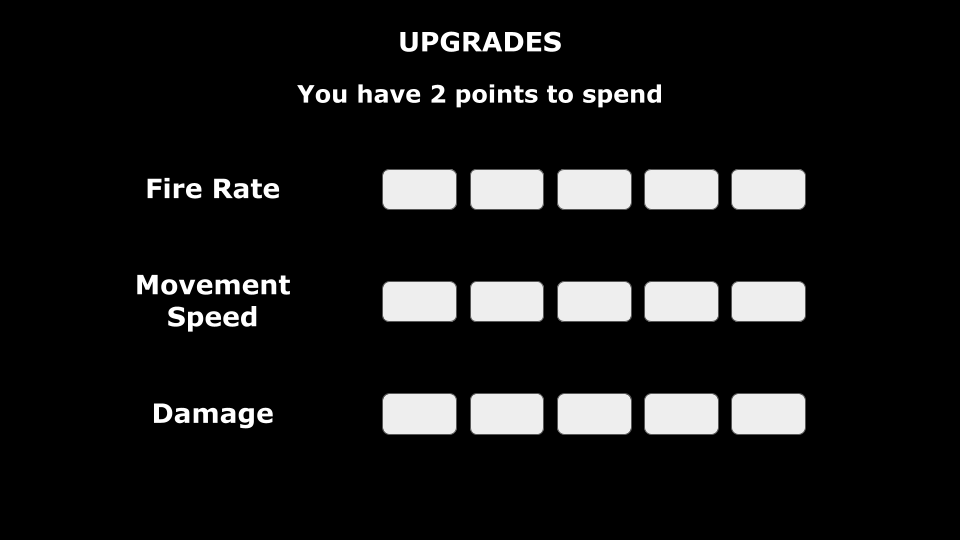
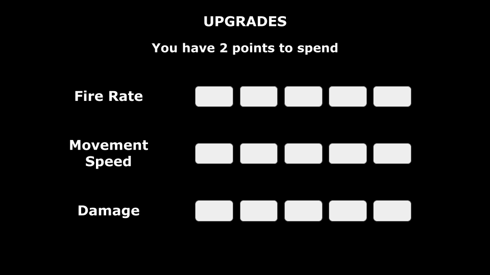

Starting this project, I knew that based on my concept, the Circle Blast homework would be very helpful in understanding the steps needed to bring my idea to life. I followed along in a similar format for many of the initial asset and label loading processes, as well as used some of the preexisting utilities like the RectIntersect. However, in order to distinguish this assignment from Circle Blast I made a few changes. I decided that for my game, you would have a big target to protect along with avoiding damage yourself, and that movement would be using the keys instead of the mouse. I also added in an upgrade system in between waves so that you have a better chance of survival as the game progresses. I was also able to figure out circle intersection for the planet, the meteors, and the ship to all have more accurate hitboxes. The player movement tutorial by Dower Chin was extremely helpful in figuring out player movement. Overall, I am very proud of the game I was able to create, and I definitely plan to continue working on it even after turning it in. Asset sources are listed at the bottom of the page.
In the future I plan to continue to work on this game so these are some additions I would make. I would like to add more enemies to the game. Right now, the damage upgrade is useless as every enemy currently dies in one hit, but adding stronger enemies later would give the damage upgrade a use. I would also like to make the health into a health bar for better visuals. I also want to add power-ups like extra lives, shield refills for the earth, and special attack meter fills.
The Earth is in danger and it's up to you to protect the planet. You control a satellite equipped with weapons to protect the Earth from incoming projectiles. Orbit the planet, upgrade your weapons, and protect the Earth till the bitter end.
Protect the Planet is a tower defense game. This version will be a desktop web game but could potentially work on mobile if I made the necessary changes to the layout of certain parts. There will be a very simple story of you being tasked with controlling the defense system that keeps the Earth protected from planetary threats. Aesthetically, I will attempt to give the game a sci-fi feel, potentially in a pixelated art style.
During gameplay, the player will be able to control a ship that orbits around the Earth, using the left and right arrow keys to move and the spacebar to shoot. In between rounds, the player will have access to an upgrades menu that they will be able to spend points in. The Earth will have a certain amount of health that is depleted each time the planet is hit by a projectile. Once the planet's health reaches zero, it's game over. There will be an instructions screen right after the start screen for the player to use.

For this project, I'll be using Kenney Assets to start off for art in the game and if I have time, I may attempt to make my own art. This is definitely something I would do if I came back to the game later and I would also work on formatting a mobile version of the game as I would need to change the controls as well as the layouts of some menus.
Background: Meteor Shower Vectors by
Vecteezy
Sound: All sound is from freesound.org
Art: All art assets, with the exception of the explosions, are from free Kenney Game Assets packs.
Name: Omar Grant
Major: Game Design and Development 24'
Skillsets: C#, HTML, CSS, JS Programming